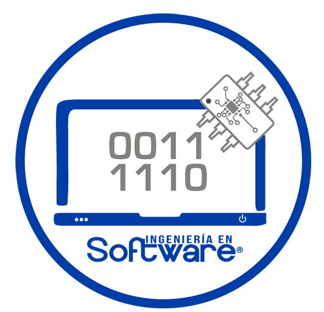

UNIVERSIDAD POLITECNICA DE TECÁMAC
Ingenieria en Software
Seguridad de la Información
Parcial III
INTEGRANTES:
Christian Alejandro Melendez Lopez
Diana Jazmin Lazaro Ramirez
MATRICULAS:
1321124187
1321124198
NÉSTOR APOLO LOPEZ GONZÁLES
4924IS

La tecnología y la informática se han convertido en piedras angulares
de nuestra sociedad, cambiando la forma en que vivimos, trabajamos y
nos comunicamos.
Con este progreso, existe una necesidad urgente de comprender y
aplicar los principios de autoría legales y éticos que rigen el uso de
la tecnología. A continuación, cubrimos varios temas clave en nuestro
sitio web diseñados para brindar una comprensión práctica y profunda
del derecho y la ética informática.
También discutiremos el proceso de desarrollo de un código de conducta
y ética informática, que son herramientas importantes para promover el
uso responsable y ético de la tecnología.
En resumen, esta serie de cursos está diseñada para proporcionar una
comprensión integral del derecho y la ética informática, centrándose
en los aspectos legales y éticos del uso de la tecnología.